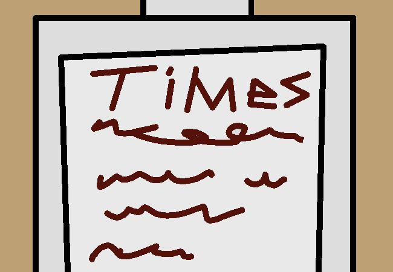

Go to information kiosk

You walk over to the information kiosk. It cycles through regular train times like a screen saver but also includes a touch screen for other bits of information.
You can pick between "!#$&%*@ Station General Info", "!#$&%*@ Station History", "!#$&%*@ City History", "Available suburbs and planned suburbs"
Some of these are probably uninteresting but you can read them all anyways if you want to.
> Read City History
Previous Page